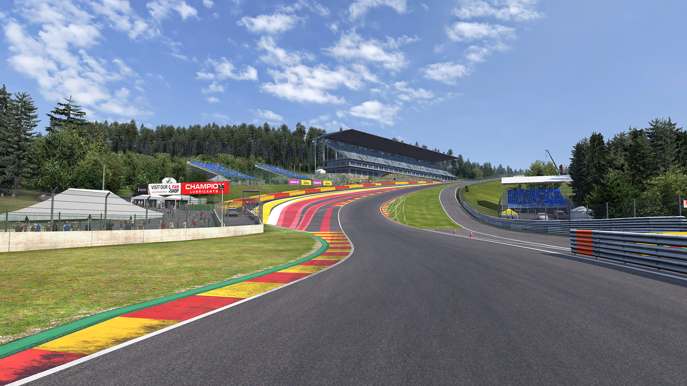
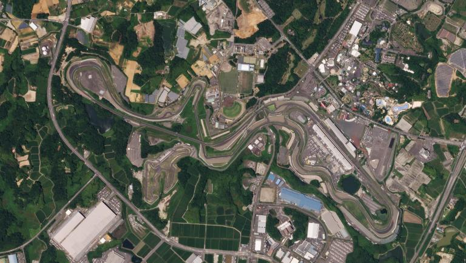
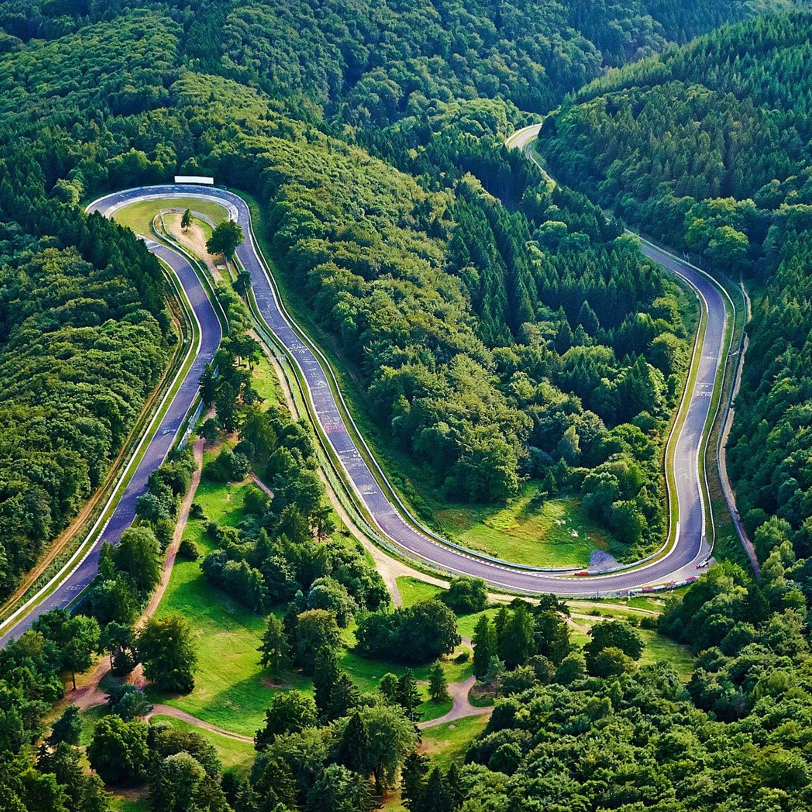
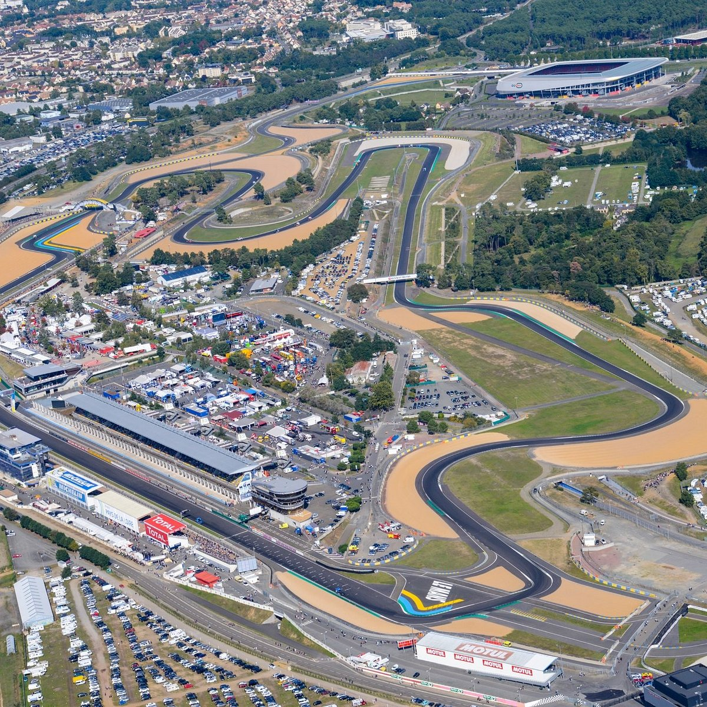

Monaco
Country: Monaco
Length: 3.337 km
Series: Formula 1
The most famous street circuit in motorsport. Known for its narrow roads and luxury atmosphere.

Silverstone
Country: United Kingdom
Length: 5.891 km
Series: Formula 1
Home of British motorsport and one of the fastest tracks.

Spa-Francorchamps
Country: Belgium
Length: 7.004 km
Series: Formula 1, WEC
Famous for Eau Rouge and changing weather conditions.

Suzuka
Country: Japan
Length: 5.807 km
Series: Formula 1
One of the most technical circuits in the world.

Nürburgring
Country: Germany
Length: 20.8 km
Series: Endurance Racing
Known worldwide as the Green Hell.

Le Mans
Country: France
Length: 13.626 km
Series: WEC
Home of the legendary 24 Hours of Le Mans.